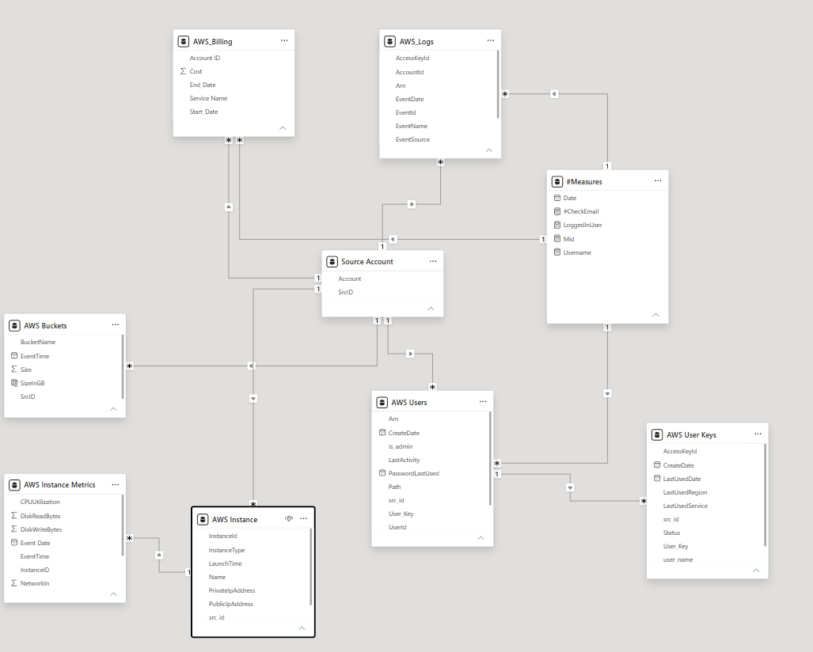

Automated Attendance & Leave Reporting System
Project Overview
Python + SQL automation system that pulls attendance and leave data from multiple sources, processes balances, and auto-generates daily/weekly Power BI reports with email delivery.
Replaces manual reporting with scheduled scripts that handle data extraction, transformation, and distribution — reducing HR reporting effort by ~80%.
My Role
I built the ETL scripts in Python and SQL that extract biometric punch data from multiple office locations, transform it into structured attendance records, and load it into the reporting database. I also designed the Power BI Report Builder templates and configured automated email delivery through SQL Server Agent.
The core challenge was replacing a fully manual process — HR teams at each location were extracting attendance data by hand and maintaining separate Excel files. I automated the entire workflow end-to-end, including leave management integration and quota tracking, so all locations feed into one unified system with no manual intervention.
Results & Impact
Time Savings
Reduced HR manual reporting effort by ~80% through automated data consolidation and scheduled report delivery.
Accuracy
Eliminated human error in attendance calculations with SQL-based automated logic for check-in, break, and checkout times.
Visibility
Gave department heads real-time insight into team attendance patterns, late arrivals, and early departures.
📊 Data Architecture
The system is built on a normalized SQL database architecture with automated stored procedures that handle data transformation and aggregation.

SQL Automation Highlights
- Scheduled stored procedures run daily to consolidate attendance records
- Automatic calculation of worked hours, overtime, and absence patterns
- Integration with leave request system for comprehensive attendance tracking
- Power BI Report Builder integration for paginated reports and email subscriptions
📦 Automation Scripts
SQL Viewvw_checkin_checkout▼
ALTER view [dbo].[vw_checkin_checkout]
as
SELECT
CONCAT(hr.emp_firstname,' ',hr.emp_lastname) AS employee_name
,hr.emp_pin AS employee_id
,hr.emp_email AS employee_email
,hdt.dept_name AS employee_dept
,hdp.posi_name AS employee_position
,CASE
WHEN ap.terminal_id = 1 THEN 'Rawalpindi'
WHEN ap.terminal_id = 2 then 'Lahore'
WHEN ez.zone_id = 2 THEN 'Rawalpindi'
WHEN ez.zone_id = 1 then 'Lahore'
ELSE '' END AS Location
,CAST(ap.punch_time AS DATE) AS punch_date
,MIN(CASE WHEN ap.workstate = 0 THEN ap.punch_time END) AS checkin
,MAX(CASE WHEN ap.workstate = 1 THEN ap.punch_time END) AS check_out
,MIN(CASE WHEN ap.workstate = 2 THEN ap.punch_time END) AS Break_in
,MAX(CASE WHEN ap.workstate = 4 THEN ap.punch_time END) AS Break_out
FROM hr_employee hr
LEFT JOIN hr_department hdt ON hdt.id = hr.department_id
LEFT JOIN hr_position hdp ON hdp.id = hr.position_id
LEFT JOIN att_punches ap ON ap.employee_id = hr.id
left join [ZKTeco].[dbo].att_employee_zone ez on ez.employee_id = hr.id
WHERE hr.emp_active = 1
GROUP BY CONCAT(hr.emp_firstname,' ',hr.emp_lastname),hr.emp_pin,hr.emp_email,hdt.dept_name,hdp.posi_name
,CASE WHEN ap.terminal_id = 1 THEN 'Rawalpindi'
WHEN ap.terminal_id = 2 then 'Lahore'
WHEN ez.zone_id = 2 THEN 'Rawalpindi'
WHEN ez.zone_id = 1 then 'Lahore'
ELSE ''
END
,CAST(ap.punch_time AS DATE)
GOSQL Procedureabsent_data_run▼
ALTER PROCEDURE [dbo].[absent_data_run]
AS
BEGIN
DELETE FROM absent_data WHERE punch_date = CAST(GETDATE() AS DATE);
INSERT INTO absent_data (employee_id, employee_name, punch_date, employee_email, employee_dept, employee_position)
SELECT
hr.id AS employee_id,
CONCAT(hr.emp_firstname, ' ', hr.emp_lastname) AS employee_name,
CAST(GETDATE() AS DATE) AS punch_date,
hr.emp_email,
hdt.dept_name AS employee_dept,
hdp.posi_name AS employee_position
FROM hr_employee hr
LEFT JOIN hr_department hdt ON hdt.id = hr.department_id
LEFT JOIN hr_position hdp ON hdp.id = hr.position_id
WHERE hr.id NOT IN (
SELECT DISTINCT employee_id
FROM vw_checkin_checkout
WHERE punch_date = CAST(GETDATE() AS DATE)
)
AND hr.emp_active = 1;
END;
GOSQL Viewvw_attdata (Main)▼
ALTER view [dbo].[vw_attdata] as
select x.*,z.leaveStatus,z.StartDate,z.EndDate from (
SELECT
CONCAT(hr.emp_firstname, ' ', hr.emp_lastname) AS employee_name,
hr.id AS employee_id,
hr.emp_email AS employee_email,
hdt.dept_name AS employee_dept,
hdp.posi_name AS employee_position,
CASE
WHEN ap.terminal_id = 1 THEN 'Rawalpindi'
WHEN ap.terminal_id = 2 then 'Lahore'
WHEN ez.zone_id = 2 THEN 'Rawalpindi'
WHEN ez.zone_id = 1 then 'Lahore'
ELSE ''
END AS Attendance_Location_,
CAST(ap.punch_time AS DATE) AS punch_date,
MIN(CASE WHEN ap.workstate = 0 THEN ap.punch_time END) AS Attendance_checkin_,
MAX(CASE WHEN ap.workstate = 1 THEN ap.punch_time END) AS Attendance_check_out_,
MIN(CASE WHEN ap.workstate = 2 THEN ap.punch_time END) AS Attendance_Break_in_,
MAX(CASE WHEN ap.workstate = 4 THEN ap.punch_time END) AS Attendance_Break_out_,
case
wHEN MIN(CASE WHEN ap.workstate = 0 THEN ap.punch_time END) IS NULL then 'Not Available On-Site'
WHEN CAST(ap.punch_time AS DATE) BETWEEN '2025-03-03' AND '2025-03-31' THEN
case
when CAST(MIN(CASE WHEN ap.workstate = 0 THEN ap.punch_time END) AS TIME)> '08:20:59'
THEN 'Late'
ELSE 'On Time'
END
WHEN CAST(MIN(CASE WHEN ap.workstate = 0 THEN ap.punch_time END) AS TIME) > '09:20:59'
THEN 'Late'
ELSE 'On Time'
END AS AttendanceStatus,
CASE
WHEN MAX(CASE WHEN ap.workstate = 1 THEN ap.punch_time END) IS NULL
THEN ''
WHEN CAST(ap.punch_time AS DATE) BETWEEN '2025-03-03' AND '2025-03-31' THEN
CASE
WHEN CAST(MAX(CASE WHEN ap.workstate = 1 THEN ap.punch_time END) AS TIME) < '15:27:00'
THEN 'Early Out'
ELSE 'Out Timely'
END
WHEN CAST(MAX(CASE WHEN ap.workstate = 1 THEN ap.punch_time END) AS TIME) < '16:57:00'
THEN 'Early Out'
ELSE 'Out Timely'
END AS CheckoutStatus
FROM [ZKTeco].[dbo].hr_employee hr
LEFT JOIN [ZKTeco].[dbo].hr_department hdt ON hdt.id = hr.department_id
LEFT JOIN [ZKTeco].[dbo].hr_position hdp ON hdp.id = hr.position_id
LEFT JOIN [ZKTeco].[dbo].att_punches ap ON ap.employee_id = hr.id
left join [ZKTeco].[dbo].att_employee_zone ez on ez.employee_id = hr.id
WHERE hr.emp_active = 1
and cast(ap.punch_time as date) not in ('2025-01-15','2025-01-16')
GROUP BY
CONCAT(hr.emp_firstname, ' ', hr.emp_lastname),
hr.id,
hr.emp_email,
hdt.dept_name,
hdp.posi_name,
CASE
WHEN ap.terminal_id = 1 THEN 'Rawalpindi'
WHEN ap.terminal_id = 2 then 'Lahore'
WHEN ez.zone_id = 2 THEN 'Rawalpindi'
WHEN ez.zone_id = 1 then 'Lahore'
ELSE ''
END,
CAST(ap.punch_time AS DATE)
union all
SELECT
hr.employee_name AS employee_name
,hr.employee_id AS employee_id
,hr.employee_email as employee_email
,hr.employee_dept AS employee_dept
,hr.employee_position AS employee_position
,azn.ZoneName as Attendance_Location_
,hr.punch_date AS punch_date
,null AS Attendance_checkin_
,null AS Attendance_check_out_
,null AS Attendance_Break_in_
,null AS Attendance_Break_out_
,'Not Available On-Site' AS AttendanceStatus
, '' AS CheckoutStatus
FROM [ZKTeco].[dbo].absent_data hr
left join att_employee_zone ez on hr.employee_id=ez.employee_id
left join att_zone azn on ez.zone_id=azn.zone_code
)x
left join
(
SELECT
distinct vw.employee_id
,[Requester]
,vw.employee_name
,employee_dept
,employee_position
,Location
,cast(StartDate as date) StartDate
,cast(EndDate as date) EndDate
,[Status]
,'' AS Attendance_checkin_
,'' AS Attendance_check_out_
,'' AS Attendance_Break_in_
,'' AS Attendance_Break_out_
,'' AS AttendanceStatus
, '' AS CheckoutStatus
,[LeaveType] as leaveStatus
FROM [LeaveApp].[dbo].[LRLA2025] la
left join [ZKTeco].[dbo].[vw_checkin_checkout] vw on vw.employee_email = la.Requester
where Status != 'Declined'
)z
on x.employee_email=z.Requester and x.punch_date between cast(z.StartDate as date) and cast(z.EndDate as date) and x.Attendance_Location_ = z.Location
GO📸 Dashboard View

Real-time attendance tracking and leave management dashboard
Key Features
Automated Daily Reporting
Scheduled SQL Agent jobs generate and email attendance reports without manual intervention.
Multi-Location Support
Consolidates biometric punch data from Rawalpindi and Lahore offices into unified views.
Leave Integration
Cross-references leave applications to distinguish approved absences from unexcused ones.
Paginated Report Distribution
Power BI Report Builder delivers formatted PDFs via email to department heads and HR.
Tech Stack
Data & Automation
- SQL Server & Stored Procedures
- Python (ETL scripting)
- SQL Server Agent
Business Intelligence
- Power BI Desktop
- Power BI Report Builder
- DAX